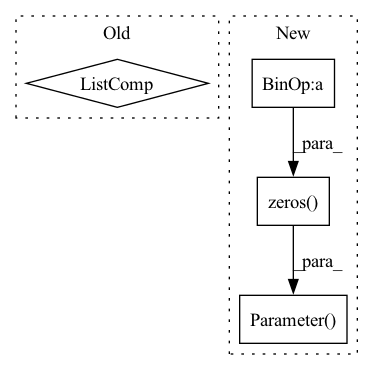

Pattern ID :10889

Before Change
self.tok_emb = nn.Embedding(codebook_size, dim)
self.pos_emb = nn.Parameter(torch.zeros(1, 512, dim))
self.EncoderLayers = nn.ModuleList([Encoder(dim) for _ in range(N)])
self.Token_Prediction = nn.Linear(in_features=dim, out_features=codebook_size)
self.apply(weights_init)
After Change
nn.GELU(),
nn.LayerNorm(args.dim, eps=1e-12)
])
self.bias = nn.Parameter(torch.zeros(self.num_image_tokens+1, args.num_codebook_vectors + 2))
self.ln = nn.LayerNorm(args.dim, eps=1e-12)
self.drop = nn.Dropout(p=0.1)
self.apply(weights_init)
In pattern: SUPERPATTERN
Frequency: 3
Non-data size: 4
Instances
Fragment ID: 37678078
Project Name: dome272/maskgit-pytorch
Commit Name: 5042389656c05da20be7632a6169a7567a65891a
Time: 2022-04-22
Author: 61938694+dome272@users.noreply.github.com
File Name: bidirectional_transformer.py
M Class Name: BidirectionalTransformer
N Class Name: BidirectionalTransformer
M Method Name: __init__(2)
N Method Name: __init__(4)
M Parent Class: nn.Module
N Parent Class: nn.Module
M File Name: bidirectional_transformer.py
N File Name: bidirectional_transformer.py
M Start Line: 78
M End Line: 84
N Start Line: 107
N End Line: 122
'>
Before Change
// load parameters info
self.depth = config["depth"]
self.crossnet = nn.ModuleList([CrossNetComp(config) for _ in range(self.depth)])
self.linear = nn.Linear(config["feature_num"] * config["embedding_size"], 1)
nn.init.normal_(self.linear.weight)
self.backbone = ["crossnet", "linear", "embedding_layer"]
After Change
self.depth = config["depth"]
self.embedding_size = config["embedding_size"]
self.feature_num = config["feature_num"]
self.in_feature_num = self.feature_num * self.embedding_size
self.cross_layer_w = nn.ParameterList(
nn.Parameter(torch.randn(self.in_feature_num, self.in_feature_num)) for _ in range(self.depth)
)
self.bias = nn.ParameterList(nn.Parameter(torch.zeros(self.in_feature_num, 1)) for _ in range(self.depth))
self.linear = nn.Linear(self.in_feature_num, 1)
nn.init.normal_(self.linear.weight)
'>
Fragment ID: 37678079
Project Name: rucaibox/recbole
Commit Name: 51c529636f50609adb6b71d9c97440f6b2a7e3d2
Time: 2023-01-20
Author: 1194970401@qq.com
File Name: recbole/model/context_aware_recommender/kd_dagfm.py
M Class Name: CrossNet
N Class Name: CrossNet
M Method Name: __init__(2)
N Method Name: __init__(2)
M Parent Class: nn.Module
N Parent Class: nn.Module
M File Name: recbole/model/context_aware_recommender/kd_dagfm.py
N File Name: recbole/model/context_aware_recommender/kd_dagfm.py
M Start Line: 179
M End Line: 189
N Start Line: 170
N End Line: 178
'>
Before Change
// define layers and loss
// init weight and bias of each cross layer
self.cross_layer_parameter = [nn.Parameter(torch.empty(self.num_feature_field * self.embedding_size,
device=self.device))
for _ in range(self.cross_layer_num * 2)]
self.cross_layer_w = nn.ParameterList(
self.cross_layer_parameter[:self.cross_layer_num])
self.cross_layer_b = nn.ParameterList(
self.cross_layer_parameter[self.cross_layer_num:])
After Change
// init weight and bias of each cross layer
self.cross_layer_w = nn.ParameterList(nn.Parameter(torch.randn(self.num_feature_field * self.embedding_size)
.to(self.device)) for _ in range(self.cross_layer_num))
self.cross_layer_b = nn.ParameterList(nn.Parameter(torch.zeros(self.num_feature_field * self.embedding_size)
.to(self.device)) for _ in range(self.cross_layer_num))
// size of mlp hidden layer
size_list = [self.embedding_size * self.num_feature_field] + self.mlp_hidden_size
'>
Fragment ID: 37678076
Project Name: rucaibox/recbole
Commit Name: 66bd447c75f71d50d3cfe8bae8c371f3ad057139
Time: 2020-12-29
Author: 970955517@qq.com
File Name: recbole/model/context_aware_recommender/dcn.py
M Class Name: DCN
N Class Name: DCN
M Method Name: __init__(3)
N Method Name: __init__(3)
M Parent Class: ContextRecommender
N Parent Class: ContextRecommender
M File Name: recbole/model/context_aware_recommender/dcn.py
N File Name: recbole/model/context_aware_recommender/dcn.py
M Start Line: 40
M End Line: 52
N Start Line: 40
N End Line: 49